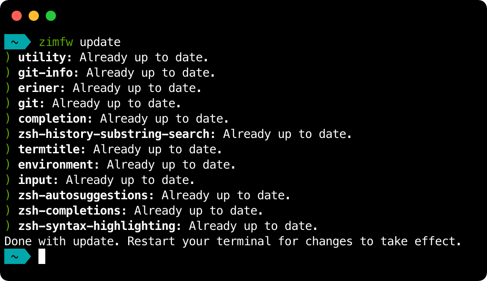

<!-- Main Hero -->
<section class="hero is-primary is-fullheight">
  <div class="hero-body">
    <div class="container">
      <div class="columns is-vcentered reverse-columns">
        <div class="column" data-aos="fade-down">
          <h1 class="title titled is-1 mb-6">
            Get Zim.
          </h1>
          <h2 class="subtitled subtitle is-4 has-text-weight-normal is-family-sans-serif">
            The Zsh configuration framework with <b><a href="https://github.com/zimfw/zimfw/wiki/Speed" target="_blank">blazing speed</a></b> and <b><a href="https://github.com/zimfw/zimfw/wiki/Modules" target="_blank">modular extensions</a></b>.
          </h2>
          <div class="buttons">
            <a
              class="button is-black"
              href="#install"
            >
              Get it
          </a>
            <a 
              class="button"
              href="/docs/"
            >
              Docs
            </a>
          </div>
        </div>
        <div data-aos="fade-right" class="column is-offset-1 is-5">
          <figure class="image has-shadow">
            
          </figure>
        </div>

      </div>
    </div>
  </div>
</section>

<!-- Typewriter Showcase -->
<section class="hero is-dark is-medium has-text-centered">
  <div class="hero-body">
    <div class="container">
      <div class="columns is-centered">
        <div data-aos="zoom-in-up" class="column is-8">
          <h1 class="title titled is-1 mb-6">
            your terminal: <span id="typewriter"></span>
          </h1>
          <h2 class="subtitle subtitled">
            Zim bundles useful modules, a wide variety of themes, and plenty of customizability into a simple and super fast framweork. 
          </h2>
          <figure class="image has-shadow">
            
          </figure>
        </div>
      </div>

    </div>
  </div>
</section>

<!-- Substring Demo -->
<section class="hero is-medium">
  <div class="hero-body">
    <div class="container">
      <div class="columns is-variable is-8 is-vcentered">
        <div data-aos="fade-left" class="column">
          <figure class="image has-shadow">
            
          </figure>
        </div>
        <div data-aos="fade-down" class="column">
          <h1 class="titled title is-1 mb-6">
            predictive shell history
          </h1>
          <h2 class="subtitled subtitle">
            Zim suggests commands as you type based on history and completions, allowing easy access to that thing you did yesterday but forgot already.
          </h2>
        </div>

      </div>
    </div>
  </div>
</section>

<!-- Syntax Highlighting Demo -->
<section class="hero is-dark is-medium">
  <div class="hero-body">
    <div class="container">
      <div class="columns is-variable is-8 is-vcentered reverse-columns">
        <div data-aos="fade-right" class="column">
          <h1 class="title titled is-1 mb-6">
            helpful syntax highlighting
          </h1>
          <h2 class="subtitle subtitled">
            Looking for those missing {}? Zim won't let you down.
          </h2>
        </div>
        <div data-aos="fade-down" class="column" data-aos="fade-up">
          <figure class="image has-shadow">
            
          </figure>
        </div>

      </div>
    </div>
  </div>
</section>

<!-- Installation Instructions -->
<section id="install" class="hero is-primary is-medium has-text-centered">
  <div class="hero-body">
    <div class="container">
      <div class="columns is-centered">
        <div data-aos="zoom-in-up" class="column is-8">
          <h1 class="title titled is-1 mb-6">
            supercharge your terminal with Zim
          </h1>
          <h2 class="subtitle subtitled">
            Zim can be installed by running one of the commands below in your terminal.
          </h2>
          <div class="install">
            <div class="tabs is-boxed mb-0">
              <ul>
                <li id="curlBtn" onclick="switchTabs('curl')" class="is-active"><a>with curl</a></li>
                <li id="wgetBtn" onclick="switchTabs('wget')"><a>with wget</a></li>
              </ul>
            </div>
            <pre id="installCommand" class="has-background-dark has-text-white">curl -fsSL https://zimfw.sh/install.zsh | zsh</pre>
          </div>
        </div>
      </div>
    </div>
  </div>
</section>

<!-- Scripts -->
<script src="https://cdnjs.cloudflare.com/ajax/libs/TypewriterJS/2.13.1/core.min.js"></script>
<script>
  new Typewriter('#typewriter', {
    strings: ['super fast', 'working for you', 'powerfully intergrated', 'just how you like it'],
    autoStart: true,
    loop: true,
  });
</script>
<script src="https://unpkg.com/aos@next/dist/aos.js"></script>
<script>
  AOS.init({
    once: true
  });
</script>
<script>
  function switchTabs(name) {
    var curlBtn = document.getElementById('curlBtn');
    var wgetBtn = document.getElementById('wgetBtn');
    var command = document.getElementById('installCommand');
    if (name === "wget") {
      curlBtn.className = "";
      wgetBtn.className = "is-active";
      command.innerText = "wget -nv -O - https://zimfw.sh/install.zsh | zsh"
    } else if (name === "curl") {
      curlBtn.className = "is-active";
      wgetBtn.className = "";
      command.innerText = "curl -fsSL https://zimfw.sh/install.zsh | zsh"
    }
  }
</script>